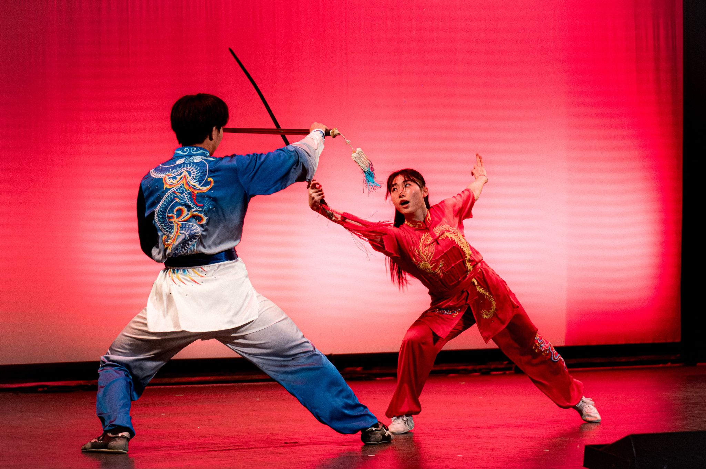
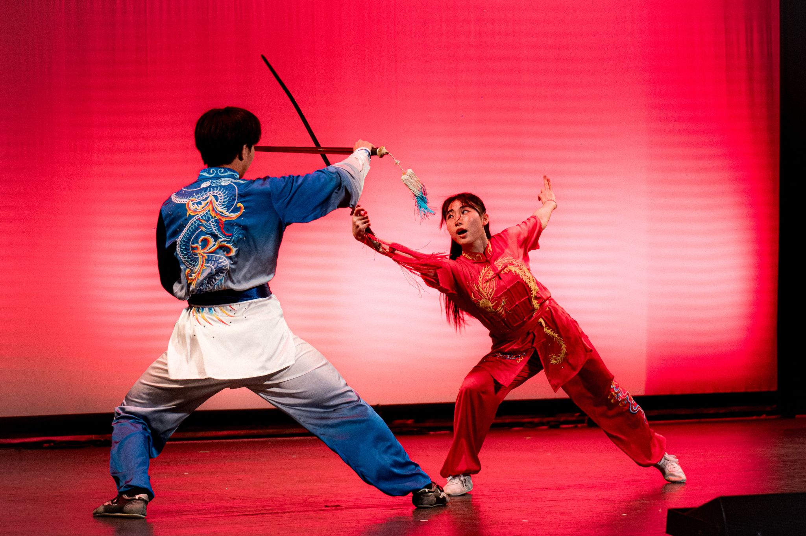

Our E-Board:
Rimi Chakravarti, President
Rimi is a junior at Barnard studying Economics. With no athletic background, she joined Columbia Wushu driven purely by her delusions of becoming the real-life Avatar. Transitioning from money-bending (as Treasurer) to Presidency, she leads CU Wushu with an iron fist. Outside of practice, you'll find her being accused of witchcraft.

Richard Li, Vice President
Richard is a sophomore in the College studying Computer Science and Math. Being an avid swim athlete and weightlifter during High School, he joined CU Wushu with one goal: to mend his broken, broken, shoulders. Gaining valuable insight from the older CU Wushu athletes, he mended his shoulders and now continues to pass on Southern-style Wushu, lifting, and stretching advice to others.


Ainsley Wang, Treasurer
Ainsley is a sophomore at Barnard studying biochemistry. She joined CU Wushu to reunite with an old friend! Outside of practice, Ainsley is but a puppet controlled by the whims of research lab roundworms. Sometimes, they let her have fun—like watching all 3 Lord of the Rings movies at once.

Angela He, Internal Communications Manager
Angela is a sophomore at Barnard College majoring in Environment and Sustainability. She was a Wushu athele for nine years before college, falling in love with the unique aspect of performance. Thus, joining Columbia's Wushu team was a no-brainer. When she’s not polishing routines, she’s either dancing in her room or on a city-wide quest for tea-flavored treats.
 

Katie Foppiano, Secretary & Assistant Performance Dir.
Katie is a senior in the Sciences Po Columbia dual degree. She joined CU Wushu after seeing a sign for free food at the club fair. When not practicing wushu, she can be found on a run or stretching for a run or eating after a run or complaining about her run or maybe on Strava?
Alex Chen, Performance Director
Alex is a sophomore at Columbia College studying biochemistry. He joined Columbia Wushu for the community but stayed for the post-practice JJ's meals. Some of his favorite memories from freshman year were during CU Wushu performances, competitions, and socials! Aside from wushu, Alex enjoys listening to music (lana on top!), eating a JJ's milkshake with waffle fries, and recording random videos.

Audrey Acken, Senior Advisor
Audrey is a senior in SEAS studying computer science. She started practicing Shaolin Wushu in high school and was excited to continue practicing with CU Wushu! In her free time, she loves drawing, books, puzzles, museums, and caffeine.